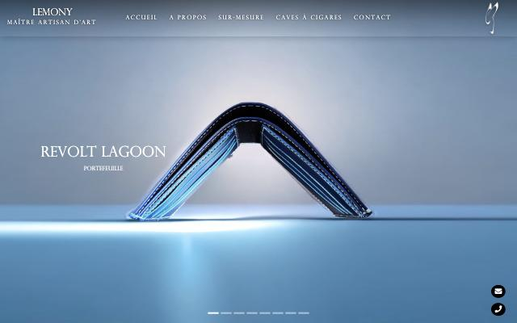
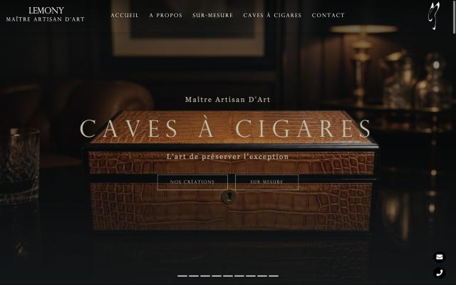
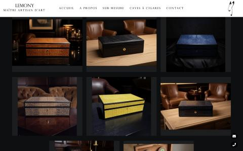
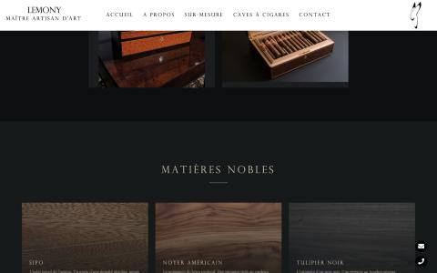
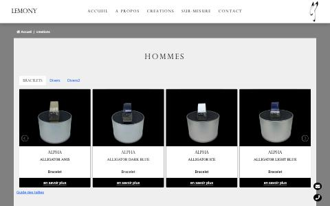
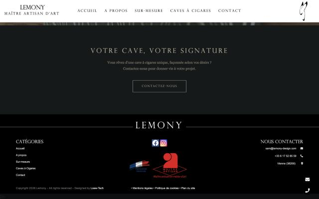
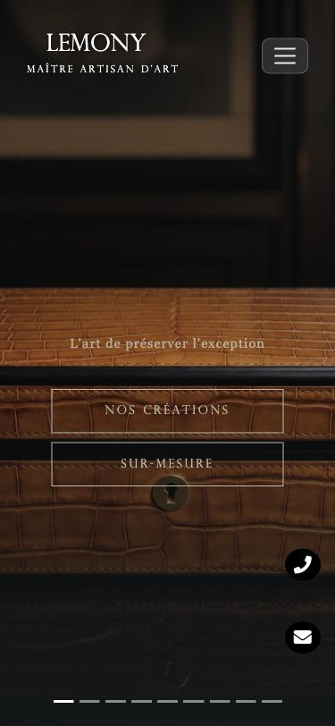

Audit de l'existant · lemony-design.com · oct. 2026
LE SITE
ACTUEL
Direction artistique, structure, contenus, technique
La page Caves à cigares en 1440 × 900 : le meilleur écran du site.
Verdict en 30 secondes
- Deux sites en un. Le gros du site est un catalogue de maroquinerie (sacs, portefeuilles, bracelets, champagne). La cave à cigares a été ajoutée après coup, sur une page plus sombre, plus récente et plus soignée.
- Une intuition juste : noir bleuté, sable, typo capitale à l'antique. C'est la base à garder.
- Une exécution qui ne suit pas : 4 polices, une vingtaine de tailles, le bleu Bootstrap qui traîne, un logo PNG de 76 px, des pages incohérentes entre elles.
- La page Caves pèse 20,7 Mo. Sur mobile en 4G, c'est plusieurs secondes d'écran noir.
01
01 — Bulletin
Notes par critère
Intention de marque (ton, univers)13/20
Cohérence visuelle entre les pages6/20
Typographie7/20
Couleur11/20
Logo et identité8/20
Photographie10/20
Structure et parcours7/20
Mobile9/20
Performance3/20
SEO et accessibilité9/20
Notes subjectives, pour hiérarchiser les chantiers, pas pour juger le travail de Loew-Tech.
Ce qu'on garde
- L'ambiance nuit + sable de la page Caves.
- L'esprit des capitales romaines espacées (Perpetua Titling).
- Le monogramme calligraphié : une vraie signature, à redessiner.
- Des textes forts : « L'art de préserver l'exception », « Du geste à l'émotion ».
- La section Matières nobles (bois et cuirs illustrés).
Ce qu'on jette
- Le catalogue maroquinerie en page d'accueil.
- Le gris clair et le bleu de l'accueil, qui n'ont rien à voir avec la cave.
- Les composants Bootstrap bruts, Arial, Georgia, les icônes Font Awesome.
- Les logos partenaires en vrac, le pied de page en Arial blanc et rouge.
02
02 — Carte du site
8 pages, 3 menus différents
| Page | Contenu | État |
|---|
| Accueil | Carrousel maroquinerie, catégories, bloc Cave, partenaires | Hors sujet |
| Caves à cigares | Hero, texte, galerie, bois, cuirs, savoir-faire, CTA | La base |
| À propos | Vidéo « Imagine something different », histoire, cuirs | Daté |
| Sur-mesure | Carrousel (champagne, flasque, sac), manifeste, références | Fourre-tout |
| Créations | 220 images, onglets « Divers » et « Divers2 » | Cassée |
| Contact | Coordonnées, horaires, formulaire, rendez-vous | Correct |
| Mentions, plan | Légal | OK |
| Cookies | Lien du pied de page | Erreur 404 |
Incohérences de navigation
- Créations n'est pas dans le menu principal, mais c'est là que se trouvent les produits. Sa barre de menu n'affiche ni « Caves à cigares » ni le sous-titre « Maître Artisan d'Art ».
- Le pied de page de l'accueil ne liste pas la page Caves.
- La cave à cigares apparaît à trois endroits avec trois noms : « Collection d'exception », « Caves à cigares » et, dans Créations, « Écrins et saveurs ».
- Les bulles flottantes mail et téléphone sont présentes partout et masquent du contenu sur mobile.
03
03 — Le problème central
Deux identités se battent

Accueil : bleu glacé, produit flottant, esthétique tech et lifestyle.

Caves : nuit, cuir cognac, lumière chaude, esthétique club anglais.
Le visiteur qui arrive par l'accueil ne voit aucune cave au-dessus de la ligne de flottaison. Il voit un portefeuille bleu sous une lumière de studio. La page Caves raconte autre chose, avec d'autres couleurs.
Conséquence pour la refonte : la nouvelle charte doit partir de l'univers de la page Caves et le pousser beaucoup plus loin. Elle ne doit pas chercher un compromis entre les deux.
04
04 — Couleurs extraites du CSS
La palette réelle
Relevé de toutes les couleurs dans les 8 feuilles de style (5 145 lignes). Le nombre indique combien de fois chaque couleur est utilisée.
#15191A · 16×
Noir bleuté, fond Caves
#0D0F10 · 4×
Noir profond, dégradés
#C1BCA7 · 33×
Sable, titres et textes
#C1AA77 · ~20× en rgba
Or doux, filets et accents
#8A8474 · 5×
Taupe, texte secondaire
#F5F0E8 · 4×
Ivoire
#CCCCCC · 12×
Gris clair, fonds de l'accueil
#0062CC · 16×
Bleu Bootstrap, liens
#FDF497 · 12×
Jaune, dégradé Instagram
#D6249F · 6×
Magenta Instagram
#DC3545 · 8×
Rouge Bootstrap, erreurs
#3B5998 · 6×
Bleu Facebook
Le bon trio est là : #15191A + #C1BCA7 + #C1AA77. Contraste sable sur noir : environ 9,6:1, excellent pour du texte.
Le reste est du bruit : les couleurs de réseaux sociaux et de Bootstrap n'ont pas été choisies, elles sont restées par défaut. Il n'y a aucune variable CSS : chaque couleur est retapée à la main, ce qui explique les dérives (#C1BCA7, #C1AA77, #C9BFAE dans la brochure…).
05
05 — Typographie
4 familles, aucun système
| Police | Usage relevé | Avis |
|---|
PERPETUA TITLING MT LIGHT
renommée « FonteLoewTech » | Logo, menu, titres (≈ 80 occurrences) | À remplacer |
| Georgia | Textes courants (20×) | Par défaut |
| Arial | Pied de page, Créations (13×) | Par défaut |
| Montserrat | Déclarée 5×, jamais chargée | Fantôme |
Les points qui posent problème
- Licence : Perpetua Titling est une police commerciale Monotype. Le fichier .ttf est hébergé sur le serveur sous un autre nom. Une licence web est-elle payée ? À vérifier : c'est un risque juridique.
- Une seule graisse (Light) et que des capitales : impossible de construire une hiérarchie, d'où l'appel à Georgia et Arial.
- Une vingtaine de tailles différentes en px, rem et clamp (11, 12, 13, 14, 15, 16, 17, 18, 20, 24 px…). Aucune échelle.
- Le tracking (espacement des lettres) change d'une section à l'autre.
Direction pour la refonte
Garder l'esprit « capitale romaine gravée » avec une famille libre et complète (par exemple Cormorant, Cinzel pour les capitales, ou Marcellus), et l'associer à un texte courant lisible. Une seule échelle, en variables CSS.
06
06 — Logo et signature
Un monogramme sans fichier source
LEMONY
MAÎTRE ARTISAN D'ART
Wordmark : texte en Perpetua, pas un dessin
Constat
- Le monogramme (un L calligraphié en forme de flamme ou de feuille) n'existe qu'en PNG de 76 × 174 px. Il est flou au-delà de la taille du menu et inutilisable en impression ou en gravure.
- Le wordmark « LEMONY » est du texte dans la police du site. Ce n'est pas un logo dessiné : il varie selon la page (en blanc, en noir, avec ou sans sous-titre).
- Ailleurs, on trouve une plaque dorée « LEMONY Made in France » et une signature gravée. Ce sont d'autres versions encore.
- En 800 px de large, le wordmark chevauche le menu (« LEMONY » passe sur « ACCUEIL »).
- Pas de favicon dédié.
À demander
Qui a dessiné le monogramme ? Existe-t-il un fichier vectoriel (AI, SVG, PDF) ? Le monogramme est-il déposé (la présentation mentionne un dépôt de marque et de modèle) ?
07
07 — Zoom sur la page Caves
La meilleure page, à moitié réussie

Galerie : 9 images, dont beaucoup sont des rendus IA.

Matières nobles : la plus belle section.
Déroulé
Hero plein écran (carrousel de 9 images) → « La cave à cigares selon Lemony » (texte) → galerie → 6 bois → 7 cuirs → 5 pictos savoir-faire → « L'excellence du geste » → CTA « Votre cave, votre signature » → formulaire → pied de page.
Ce qui fonctionne
- Ambiance cohérente, beaucoup de noir, lumière chaude.
- Les bois et les cuirs présentés comme des matières : ça prépare un configurateur.
- Le titre en capitales espacées est élégant.
Ce qui casse
- Au premier écran, le titre arrive en animation : on voit d'abord un bouton posé sur la serrure de la cave.
- Le contenu est caché tant qu'on n'a pas scrollé. Si le script tarde, la page est noire.
- La barre de menu passe au blanc au scroll, sur une page noire. Ça casse l'ambiance.
- Les 5 pictos sont des icônes Font Awesome génériques.
- Aucune info concrète : pas de tailles, pas de collections (Héritage, Prestige…), pas de prix, pas de délai.
- « Quatre générations de tanneurs » ici, « trois » dans la brochure.
08
08 — Composants d'interface
Inventaire des briques
| Composant | Réalisation actuelle |
|---|
| Boutons | Contour fin sable, capitales espacées (Caves) ; noir plein « en savoir plus » (Créations) ; liens bleus (onglets) |
| Menu | Transparent sur le hero puis blanc au scroll ; burger Bootstrap sur mobile |
| Carrousels | 5 différents : Bootstrap, lightSlider, flèches « Previous / Next » en anglais |
| Cartes | Image + légende sur dégradé (Matières) ; cartes blanches Bootstrap (Créations) |
| Séparateur | Petit filet or sous les titres : joli, à garder |
| Formulaire | « Envoyez-nous un message » en bas de toutes les pages, style Bootstrap |
| Pied de page | Noir, Arial, logo Maître Artisan rouge, drapeau, icônes réseaux en couleur |
| Animations | Fondus à l'apparition (anime.js), sans réglage pour « mouvement réduit » |

Créations : Arial, bleu Bootstrap, onglets « Divers2 ».

Pied de page : Arial, logos en couleur, rouge vif.
09
09 — Contenus et ton
Une belle plume, mal relue
Les phrases à garder
- « L'art de préserver l'exception. »
- « Là où le temps se suspend. »
- « Une cave Lemony n'est pas un simple accessoire, c'est un héritage. »
- « La main guide la matière, la matière inspire la main. »
- « Chaque pièce naît d'une conversation. »
Les défauts
- Trop d'adjectifs : « exception », « noble », « absolu », « prestigieux » reviennent à chaque phrase et finissent par s'annuler.
- Contradictions : 3 ou 4 générations ; « Maison Lemony », « Lemony » ou « Lemony Design » ; « crocodile » annoncé mais pas montré.
- Restes de chantier : texte bouche-trou « Titre / Description de l'article » visible dans Créations, onglet « Divers2 », boutons « Previous / Next ».
- Fautes : « fût l'ultime déclic », « MATIERES A l'OBJET Du DESIR ».
- Aucun contenu en anglais, alors que la clientèle visée est internationale (Genève, Monaco, yachting).
Preuves citées sur le site
Maison Zilli, Patrick Henriroux / La Pyramide, Maison Ladoire (horlogerie), Jazz à Vienne, La Loge, Maison Brun, Cigar and Spice, Streetcooker, By Horizon, OXIII, Ô Biev'Vin, CD Immobilier. Une liste en vrac où des noms prestigieux côtoient des clients locaux : à trier pour la cible cigare.
10
10 — Technique, SEO, accessibilité
Sous le capot
| Point | Constat |
|---|
| Stack | HTML statique sur Apache, Bootstrap 5.1, jQuery 3.5, lightSlider, anime.js, Font Awesome 5. Réalisé par Loew-Tech. |
| Poids | Page Caves : 20,7 Mo, 40 requêtes. Galuchat 3,5 Mo, visuels PNG de 2,5 Mo. Cible : moins de 2 Mo. |
| Images | PNG et JPEG bruts, noms avec espaces et accents, pas de WebP ni AVIF, pas de tailles adaptées au mobile. |
| CSS | 8 fichiers, 5 145 lignes, aucune variable, @font-face déclaré 5 fois, une trentaine de règles @media incohérentes. |
| SEO | Titles et descriptions présents (bien), mais 13 balises H1 sur l'accueil, page Créations sans title, aucune donnée structurée. |
| Accessibilité | Textes alternatifs présents sauf 5 images de l'accueil ; contenu masqué tant que l'animation n'a pas joué ; pas de réglage « mouvement réduit ». |
| Mobile | Pas de débordement horizontal (bien), mais le titre du hero Caves disparaît et les bulles flottantes couvrent le contenu. |
| Légal | Page cookies en 404. Police commerciale auto-hébergée, licence à vérifier. |

Caves sur mobile (375 px) : le titre « Caves à cigares » n'apparaît pas, il ne reste que le slogan et deux boutons posés sur la photo.
11
11 — Ce que ça change pour la nouvelle charte
Les fondations à poser
- Un seul univers : celui de la cave, pas de la maroquinerie en général.
- Une palette resserrée en variables : 1 noir, 1 sable, 1 or. Peut-être un cognac tiré du cuir, et c'est tout.
- Un duo typographique libre avec ses graisses : capitales gravées pour les titres, serif ou sans lisible pour le texte.
- Un logo vectoriel : monogramme redessiné et wordmark composé, avec zone de protection.
- Des composants dessinés : boutons, cartes matière, sélecteur de couleur, formulaire de rendez-vous.
- Une direction photo : vraies pièces, lumière rasante, macro cuir, mains.
- Un mouvement lent, mesuré, qui ne cache jamais le contenu.
Questions pour démarrer la charte
- Nom officiel et tagline : « Maison Lemony » ? « L'art de préserver l'exception » ?
- Le monogramme est-il intouchable, ou peut-on le redessiner ?
- Trois adjectifs pour la marque, et un à éviter (« bling » ?).
- Les supports : site seul, ou aussi print (brochure, cartes, plaques gravées), Instagram ?
12